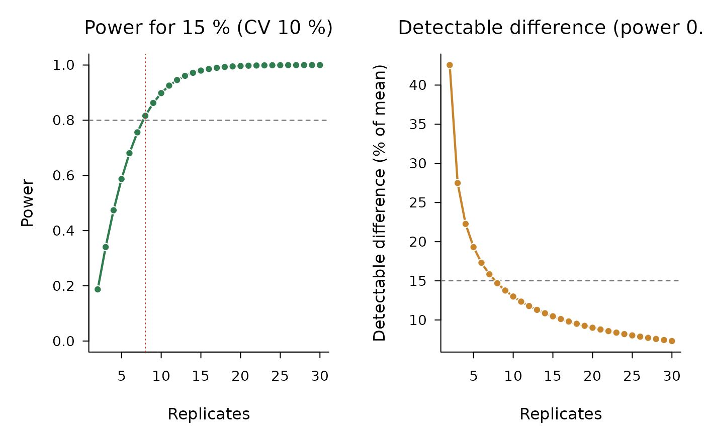

Power of the two-sided t-test to detect a difference of diff per cent
of the mean between two treatment means, when the coefficient of
variation of the trial is cv per cent, as a function of the number of
replicates. The error degrees of freedom are those of a CRD or an RCBD
with t treatments, and the power uses the noncentral t distribution.
Usage
power_design(
cv,
diff,
t,
design = c("rcbd", "crd"),
alpha = 0.05,
power = 0.8,
r = 2:30
)Value
An object of class "ad_power" with the replicates needed
(replicates, NA above 200) and a table with the error df, the power
and the detectable difference for each number of replicates.
Examples
power_design(cv = 15, diff = 15, t = 4)
#>
#> Replicates to detect a difference of 15 % of the mean (CV 15 %, 4 treatments, RCBD, alpha 0.05, power 0.8)
#> Replicates needed: 17 (error df 48)
#>
#> Replicates Error df Power Detectable diff. (%)
#> 2 3 0.111 63.8
#> 3 6 0.179 41.2
#> 4 9 0.245 33.4
#> 5 12 0.307 29.0
#> 6 15 0.368 26.0
#> 7 18 0.425 23.8
#> 8 21 0.479 22.0
#> 9 24 0.530 20.6
#> 10 27 0.578 19.5
#> 11 30 0.622 18.5
#> 12 33 0.662 17.7
#> 13 36 0.699 16.9
#> 14 39 0.732 16.3
#> 15 42 0.763 15.7
#> 16 45 0.790 15.2
#>
#> Halving the CV is worth as much as quadrupling the replicates.
plot(power_design(cv = 10, diff = 15, t = 4))
